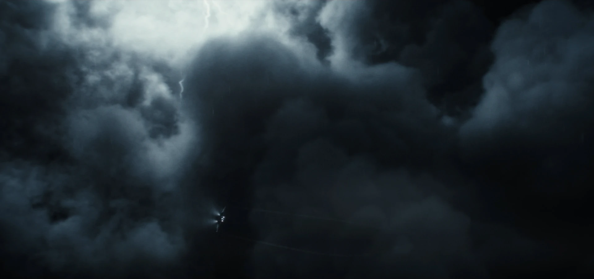
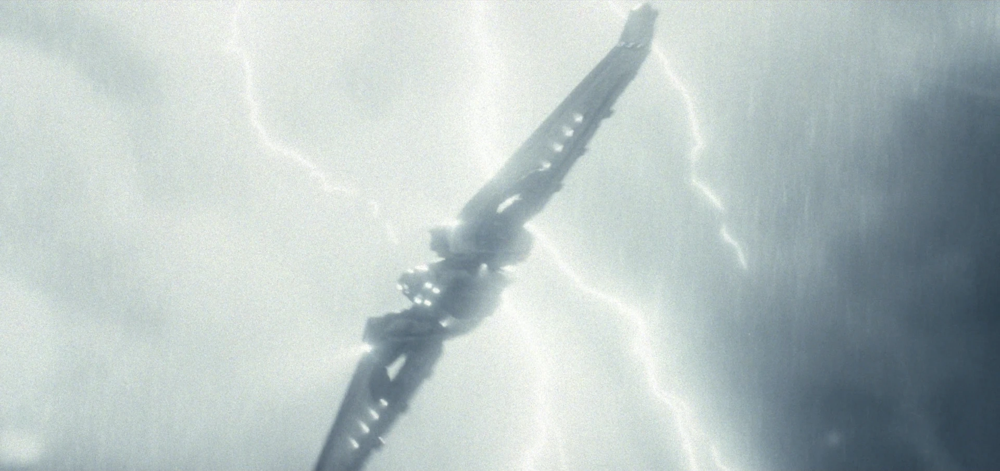
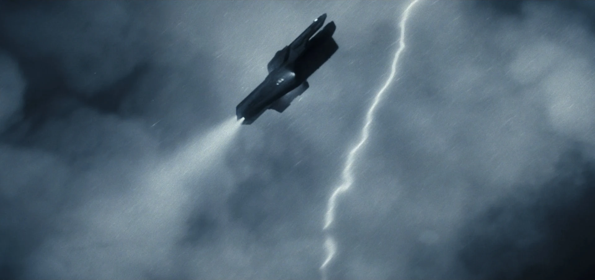
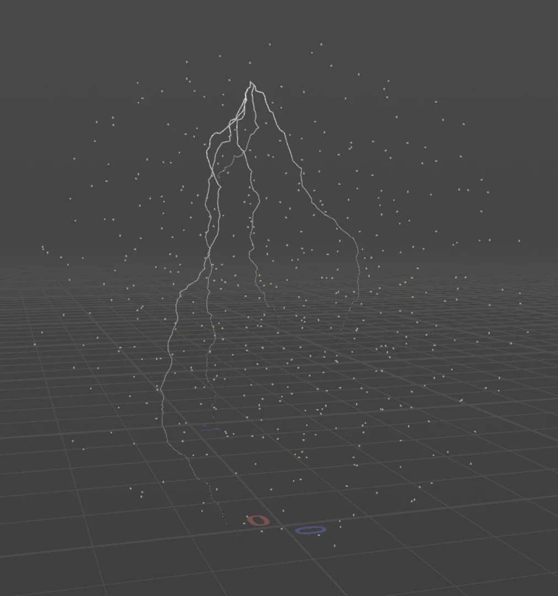
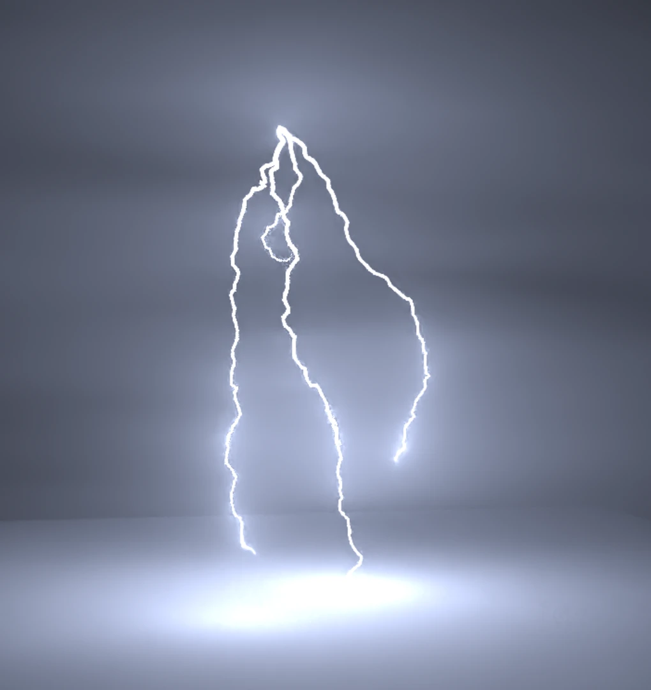
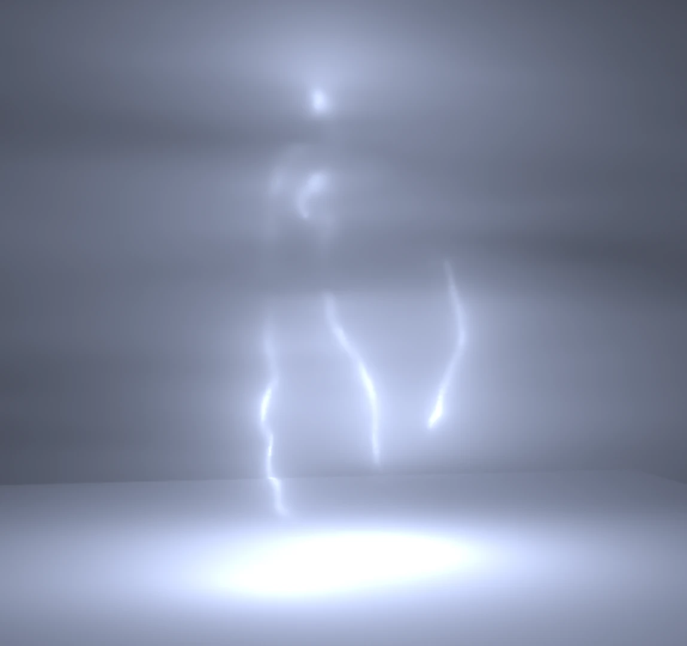
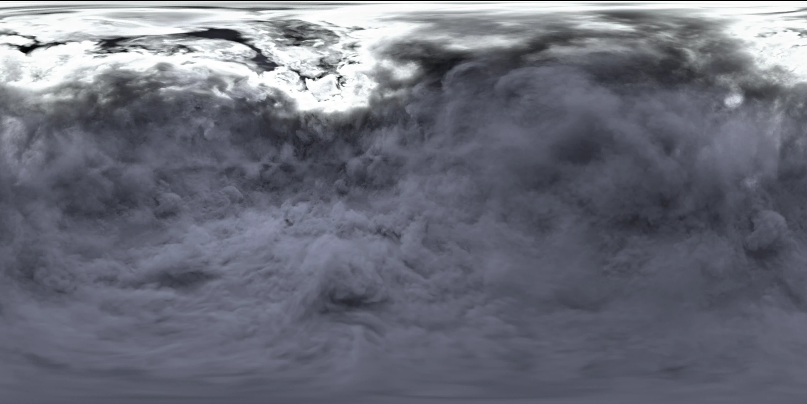
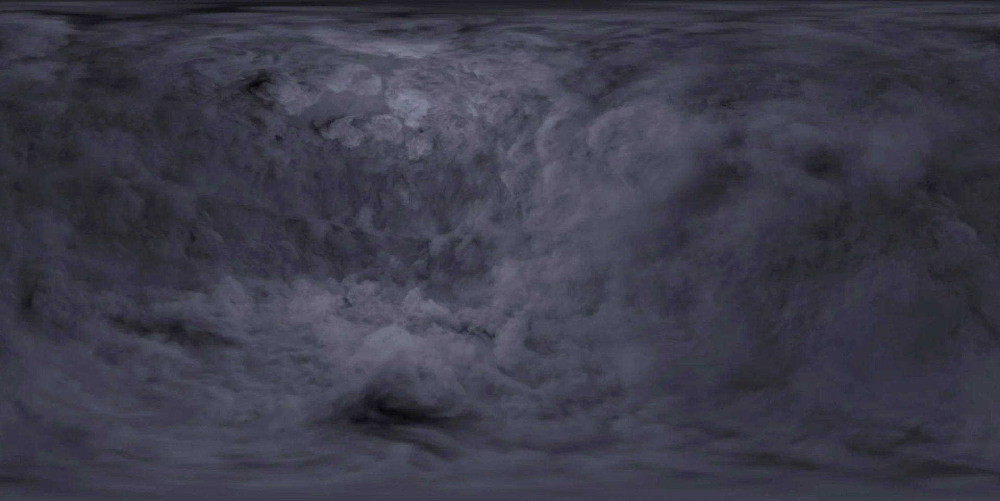

The USB
Paradox.
Lightning · Water Droplets · Volumetrics
R&D
Nuke
Overview
I was approached by Clemens Willberger to assist during the Research & Development phase. My work focused on creating and refining key visual effects — lightning strikes, water droplets, and volumetric lighting — giving the compositing team a versatile toolkit to work with.






Process
My role was not to create the final image but to build efficient workflows and reusable assets that could accelerate production — spanning water droplet rendering, lightning generation, volumetric dome lighting, HDRIs and cloud assets.
Starting with a fully rendered approach in KarmaXPU, I discovered that simulating it in Nuke via displacement offered significantly more control — and near-realtime feedback.
Starting from a point cloud architecture, I progressively added branching, twitching, and multi-path switching — delivering over 40 variations to the team.



A rather small but important part was to figure out how to get the spotlights in front of the spaceship to light the clouds and environment without causing too much noise in render. I experimented with different sampling techniques and found that using uniform sampling for the direct lighting of the volumetric environment, gave me the best results in terms of quality and performance. Of course rendering this out as an additional AOV pass would yield the biggest benefit for the compositing
I built a set of clouds and HDRIs & HDR Images deployable at any angle to serve all the different shots. More organic foreground clouds were sourced from the VRAY library.


Complete
Breakdown.
The complete breakdown covers the full scope of production — rendering, compositing, lighting, modeling and the combined effort of the entire team.
Learnings
Key technical skills developed and deepened over the course of the R&D process.